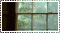
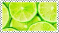
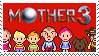
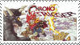
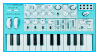
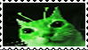
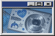
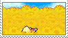
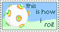

About The Person
The guy who's responsible for all of this
My name's Ari, biologist through interest and self-proclaimed artist through the need to create. I have an interest in old tech, ecology, weird software and plants. When I'm not working on this website I like to fold origami, draw, and find new ways to express myself creatively.













